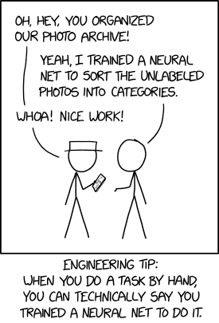

The Future of AI

The Future of AI
The future of Artificial Intelligence (AI) is bright and exciting. As the technology advances, we are seeing more and more applications of AI in our daily lives. From self-driving cars, to facial recognition, to automated personal assistant applications, AI is becoming increasingly pervasive.
The most exciting development in the field of AI is the emergence of Generative Pre-trained Transformer 3 (GPT-3), developed by OpenAI. GPT-3 is a natural language processing (NLP) model that is capable of understanding human language and producing text based on a given prompt. GPT-3 is different from traditional AI models in that it does not require labeled datasets to learn, instead it uses machine learning algorithms to learn from existing text. This is a major breakthrough in the field of AI, as it allows for the creation of AI applications that are capable of understanding and producing natural language.
Another exciting development in the field of AI is the use of Python as a programming language for AI applications. Python has become the language of choice for many AI developers due to its simplicity, flexibility, and ease of use. Python provides a range of libraries and frameworks that are specifically designed for machine learning and deep learning tasks. Python’s popularity has enabled developers to quickly and easily create powerful AI applications.
The combination of GPT-3 and Python has enabled developers to create AI applications that are more powerful and efficient than ever before. AI applications are now being used for tasks such as natural language processing, image recognition, and machine translation. In the future, AI applications will be used in a variety of industries, from healthcare to finance.
We are now entering a new era of AI, and the possibilities are endless. As the technology continues to advance, we will continue to see more applications of AI in our daily lives.